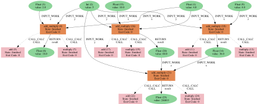

Handling complex workflows using the workflow builders¶
The WorkflowBuilder and MultipleWorkflowBuilder classes are designed to manage extended workflows consisting of a conjunction of different AiiDA processes. Input-parameters and logical dependencies can be defined in a protocol which is given as a specifically formated python-dictionary or written in a yaml-file.
The objects can determine the current state (accomplished tasks) of a workflow for a given AiiDA parent-node and generate the input-parameters for the next task of the workflow.
While the WorkflowBuilder class controls the workflow for a single parent-node the MultipleWorkflowBuilder class consists of several WorkflowBuilder’s instances and can handle multiple parent-nodes using the same workflow protocol for each.
In the following we use the WorkflowBuilder class to examplify the user interface, however, setting the workflow protocol and input parameters works the same for both objects. First, the appropriate AiiDA profile is loaded and an instance of the class is created:
[1]:
from aim2dat.aiida_workflows.workflow_builder import WorkflowBuilder
import aiida
aiida.load_profile("tests")
wf_builder = WorkflowBuilder()
The workflow protocol¶
The workflow protocols consists of three different sections:
tasks: Is a dictionary containing the details and dependencies for the tasks that can be run with the current workflow.
general_input: defines the preset parameters shared by all work chains.
user_input: defines input parameters that are set by the user.
All predefined protocols are found in the folder: “aim2dat/aim2dat/aiida_workflows/protocols/”. The workflow protocols support versions, which the suffix "_v*.*" (* denotes an integer number) a specific protocol version can be chosen. If the suffix is omitted the latest protocol version is chosen. At the moment the following protocols are implemented:
Protocol |
Latest version |
Description |
|---|---|---|
arithmetic-testing |
v1.1 |
Protocol for testing purposes. |
seekpath-standard |
v1.0 |
Protocol for a seek-path analysis. |
cp2k-crystal-mofs |
v2.0 |
Protocol to run DFT calculations on MOFs using CP2K. |
cp2k-crystal-preopt |
v3.1 |
Protocol to pre-optimize inorganic crystals with loose parameters using CP2K. |
cp2k-crystal-standard |
v3.2 |
Standard protocol to run DFT calculations on inorganic crystals using CP2K (doi:10.1063/5.0082710). |
cp2k-crystal-standard-keep-angles |
v1.1 |
Standard protocol for inorganic crystals but constraining lattice parameters. |
cp2k-surface-standard |
v1.0 |
Protocol to run the surface workflow using CP2K. |
cp2k-crystal-testing |
v2.0 |
Protocol to test the workflow for inorganic crystals with loose parameters using CP2K. |
cp2k-surface-testing |
v1.0 |
Protocol to test the surface workflow with loose parameters using CP2K. |
The protocol can be loaded by using the property protocol <aim2dat.aiida_workflows.workflow_builder.WorkflowBuilder.protocol>` (same property for both classes), in this case we use a test protocol that is merely based on the arithmetic add_multiply calcfunction. In general workflows can combine any kind of AiiDA processes defining input-parameters and dependencies.
[2]:
wf_builder.protocol = "arithmetic-testing"
All tasks of the workflow can be printed with the property tasks <aim2dat.aiida_workflows.workflow_builder.WorkflowBuilder.tasks>`:
[3]:
wf_builder.tasks
[3]:
{'task_1.1': {'dependencies': {}, 'process': 'core.arithmetic.add_multiply'},
'task_1.2': {'dependencies': {}, 'process': 'core.arithmetic.add_multiply'},
'task_1.3': {'dependencies': {}, 'process': 'core.arithmetic.add_multiply'},
'task_2.1': {'dependencies': {'task_1.2': [['result', 'x']],
'task_1.3': [['result', 'z']]},
'process': 'core.arithmetic.add_multiply'},
'task_2.2': {'dependencies': {'task_1.3': [['result', 'y']]},
'process': 'core.arithmetic.add_multiply'},
'task_3.1': {'dependencies': {'task_1.1': [['result', 'x']],
'task_2.1': [['result', 'y']],
'task_2.2': [['result', 'z']]},
'process': 'core.arithmetic.add_multiply'},
'task_4.1': {'dependencies': {'task_3.1': [['result', 'x']],
'task_1.2': [['result', 'z']]},
'process': 'core.arithmetic.add_multiply'}}
Setting up the input parameters and parent node¶
The provenance of the workflow is defined via the parent node, it is input for all initial tasks of the workflow. Here, we create a new aiida node without history and pass it to the builder-object:
[4]:
from aiida.plugins import DataFactory
Float = DataFactory("core.float")
parent_node = Float(4)
wf_builder.parent_node = parent_node
/opt/hostedtoolcache/Python/3.13.9/x64/lib/python3.13/site-packages/aiida/plugins/entry_point.py:350: AiidaDeprecationWarning: The entry point `float` is deprecated. Please replace it with `core.float`. (this will be removed in v3)
warn_deprecation(f'The entry point `{name}` is deprecated. Please replace it with `core.{name}`.', version=3)
And we can set additional input-parameters (parameters can be given as python types or AiiDA nodes). A dash and subsequent greater than sign (->) highlight an individual input parameter defined for just one task of the workflow.
[5]:
wf_builder.set_user_input("y", 5)
wf_builder.set_user_input("y->task_4.1", 11.0)
Checking the workflow state¶
At any time we can check the status of the workflow via the method determine_workflow_state:
[6]:
wf_builder.determine_workflow_state()
[6]:
{'next_possible_tasks': ['task_1.1', 'task_1.2', 'task_1.3'],
'completed_tasks': [],
'running_tasks': [],
'failed_tasks': []}
The builder checks whether any work chains with matching input parameters have been performed on the structure. In this case there are no processes run that conform the workflow protocol.
Executing workflow tasks¶
The input for the initial task can be created using the ‘builder’-method of the AiiDA work chain or calculation or a dictionary of input-parameters for AiiDA calcfunctions:
[7]:
from aiida.engine import run
wc_builder = wf_builder.generate_inputs("task_1.1")
result = run(**wc_builder)
If we check the workflow again, we see that the task ‘task_1.1’ is accomplished and we can continue with the next task:
[8]:
wf_builder.determine_workflow_state()
[8]:
{'next_possible_tasks': ['task_1.2', 'task_1.3'],
'completed_tasks': ['task_1.1'],
'running_tasks': [],
'failed_tasks': []}
Alternatively, we can run or submit the task straightaway using the methods :meth:run_task <aim2dat.aiida_workflows.workflow_builder.WorkflowBuilder.run_task> or :meth:submit_task <aim2dat.aiida_workflows.workflow_builder.WorkflowBuilder.submit_task>. The difference between the two methods is that the first uses AiiDA’s run method which starts the process in the foreground and blocks the interface while the latter uses AiiDA’s submit method which passes the process to the daemon
that is running in the background.
[9]:
wf_builder.run_task("task_1.2")
wf_builder.run_task("task_1.3")
wf_builder.run_task("task_2.1")
[9]:
(<WorkFunctionNode: uuid: 4185a7cd-0454-4c21-a75d-926f6fc723da (pk: 21) (aiida.workflows:core.arithmetic.add_multiply)>,
<Float: uuid: ec29d7e1-623c-451c-895c-a174f0ed06f0 (pk: 25) value: 2460.0>)
Visualizing the provenance graph of the workflow¶
Using the AiiDA built-in features the provenance graph of the workflow can be plotted:
[10]:
wf_builder.graph_attributes = {"graph_attr": {"size": "6!,6"}}
graph = wf_builder.generate_provenance_graph()
graph.graphviz
[10]:

The MultipleWorkflowBuilder class¶
The main difference between the WorkflowBuilder and the MultipleWorkflowBuilder class is that the latter hosts a list of parent-nodes and WorkflowBuilder instances:
[11]:
from aim2dat.aiida_workflows.workflow_builder import MultipleWorkflowBuilder
mwf_builder = MultipleWorkflowBuilder()
mwf_builder.protocol = "arithmetic-testing"
for n in range(0, 5):
mwf_builder.add_parent_node(Float(n))
/opt/hostedtoolcache/Python/3.13.9/x64/lib/python3.13/site-packages/aiida/plugins/entry_point.py:350: AiidaDeprecationWarning: The entry point `float` is deprecated. Please replace it with `core.float`. (this will be removed in v3)
warn_deprecation(f'The entry point `{name}` is deprecated. Please replace it with `core.{name}`.', version=3)
The user input parameters can be set likewise to the WorkflowBuilder class:
[12]:
mwf_builder.set_user_input("y", 2.0)
mwf_builder.set_user_input("y->task_4.1", 3.0)
The status information as well as process nodes and workflow results is therefore given as pandas dataframes:
[13]:
mwf_builder.return_workflow_states()
[13]:
| task_1.1 | task_1.2 | task_1.3 | task_2.1 | task_2.2 | task_3.1 | task_4.1 | |
|---|---|---|---|---|---|---|---|
| 0 | deps. met | deps. met | deps. met | missing deps. | missing deps. | missing deps. | missing deps. |
| 1 | deps. met | deps. met | deps. met | missing deps. | missing deps. | missing deps. | missing deps. |
| 2 | deps. met | deps. met | deps. met | missing deps. | missing deps. | missing deps. | missing deps. |
| 3 | deps. met | deps. met | deps. met | missing deps. | missing deps. | missing deps. | missing deps. |
| 4 | deps. met | deps. met | deps. met | missing deps. | missing deps. | missing deps. | missing deps. |
Different tasks can be started for all parent-nodes within one function call via the :meth:run_task <aim2dat.aiida_workflows.workflow_builder.MultipleWorkflowBuilder.run_task> or :meth:submit_task <aim2dat.aiida_workflows.workflow_builder.MultipleWorkflowBuilder.submit_task> functions:
[14]:
mwf_builder.run_task("task_1.1")
mwf_builder.return_workflow_states()
[14]:
| parent_node | task_1.1 | task_1.2 | task_1.3 | task_2.1 | task_2.2 | task_3.1 | task_4.1 | |
|---|---|---|---|---|---|---|---|---|
| 0 | 26 | completed | deps. met | deps. met | missing deps. | missing deps. | missing deps. | missing deps. |
| 1 | 34 | completed | deps. met | deps. met | missing deps. | missing deps. | missing deps. | missing deps. |
| 2 | 41 | completed | deps. met | deps. met | missing deps. | missing deps. | missing deps. | missing deps. |
| 3 | 48 | completed | deps. met | deps. met | missing deps. | missing deps. | missing deps. | missing deps. |
| 4 | 55 | completed | deps. met | deps. met | missing deps. | missing deps. | missing deps. | missing deps. |
The tasks can be started for a subset of the parent-nodes by using the interval parameter:
[15]:
mwf_builder.run_task("task_1.2", interval=[0, 3])
mwf_builder.return_workflow_states()
[15]:
| parent_node | task_1.1 | task_1.2 | task_1.3 | task_2.1 | task_2.2 | task_3.1 | task_4.1 | |
|---|---|---|---|---|---|---|---|---|
| 0 | 26 | completed | completed | deps. met | missing deps. | missing deps. | missing deps. | missing deps. |
| 1 | 34 | completed | completed | deps. met | missing deps. | missing deps. | missing deps. | missing deps. |
| 2 | 41 | completed | completed | deps. met | missing deps. | missing deps. | missing deps. | missing deps. |
| 3 | 48 | completed | deps. met | deps. met | missing deps. | missing deps. | missing deps. | missing deps. |
| 4 | 55 | completed | deps. met | deps. met | missing deps. | missing deps. | missing deps. | missing deps. |
Several tasks can be started consecutively by setting a task queue:
[16]:
mwf_builder.add_to_task_queue("task_1.2", run_type="run")
mwf_builder.add_to_task_queue("task_1.3", run_type="run")
mwf_builder.add_to_task_queue("task_2.1", run_type="run")
mwf_builder.add_to_task_queue("task_2.2", run_type="run")
mwf_builder.add_to_task_queue("task_3.1", run_type="run")
mwf_builder.add_to_task_queue("task_4.1", run_type="run")
mwf_builder.execute_task_queue()
Additional information can be returned via the functions `return_process_nodes <aim2dat.aiida_workflows.workflow_builder.MultipleWorkflowBuilder.return_process_nodes>`__ and `return_results <aim2dat.aiida_workflows.workflow_builder.MultipleWorkflowBuilder.return_results>`__:
[17]:
mwf_builder.return_process_nodes()
[17]:
| parent_node | task_1.1 | task_1.2 | task_1.3 | task_2.1 | task_2.2 | task_3.1 | task_4.1 | |
|---|---|---|---|---|---|---|---|---|
| 0 | 26 | 29 | 63 | 89 | 114 | 139 | 164 | 190 |
| 1 | 34 | 36 | 68 | 94 | 119 | 144 | 169 | 195 |
| 2 | 41 | 43 | 73 | 99 | 124 | 149 | 174 | 200 |
| 3 | 48 | 50 | 78 | 104 | 129 | 154 | 179 | 205 |
| 4 | 55 | 57 | 83 | 109 | 134 | 159 | 184 | 210 |
[18]:
mwf_builder.return_results()
[18]:
| parent_node | res_1 (test_unit) | res_2 (test_unit) | |
|---|---|---|---|
| 0 | 26 | 24.0 | 0.0 |
| 1 | 34 | 54324.0 | 12.0 |
| 2 | 41 | 366128.0 | 24.0 |
| 3 | 48 | 1251180.0 | 36.0 |
| 4 | 55 | 3145032.0 | 48.0 |
Storing and loading workflows¶
Both, the WorkflowBuilder and the MultipleWorkflowBuilder have the methods to_file and from_file implemented which allows to store the workflow protocol and process nodes in a yaml-file.
This feature can be also used to share the workflow information by exporting/importing the process nodes as well (see the AiiDA documentation for more details).
[19]:
mwf_builder.to_file("test_workflow.yaml")
mwf_builder2 = MultipleWorkflowBuilder.from_file("test_workflow.yaml")
mwf_builder2.return_workflow_states()
/opt/hostedtoolcache/Python/3.13.9/x64/lib/python3.13/site-packages/aiida/plugins/entry_point.py:350: AiidaDeprecationWarning: The entry point `float` is deprecated. Please replace it with `core.float`. (this will be removed in v3)
warn_deprecation(f'The entry point `{name}` is deprecated. Please replace it with `core.{name}`.', version=3)
/opt/hostedtoolcache/Python/3.13.9/x64/lib/python3.13/site-packages/aiida/plugins/entry_point.py:350: AiidaDeprecationWarning: The entry point `float` is deprecated. Please replace it with `core.float`. (this will be removed in v3)
warn_deprecation(f'The entry point `{name}` is deprecated. Please replace it with `core.{name}`.', version=3)
/opt/hostedtoolcache/Python/3.13.9/x64/lib/python3.13/site-packages/aiida/plugins/entry_point.py:350: AiidaDeprecationWarning: The entry point `float` is deprecated. Please replace it with `core.float`. (this will be removed in v3)
warn_deprecation(f'The entry point `{name}` is deprecated. Please replace it with `core.{name}`.', version=3)
/opt/hostedtoolcache/Python/3.13.9/x64/lib/python3.13/site-packages/aiida/plugins/entry_point.py:350: AiidaDeprecationWarning: The entry point `float` is deprecated. Please replace it with `core.float`. (this will be removed in v3)
warn_deprecation(f'The entry point `{name}` is deprecated. Please replace it with `core.{name}`.', version=3)
/opt/hostedtoolcache/Python/3.13.9/x64/lib/python3.13/site-packages/aiida/plugins/entry_point.py:350: AiidaDeprecationWarning: The entry point `float` is deprecated. Please replace it with `core.float`. (this will be removed in v3)
warn_deprecation(f'The entry point `{name}` is deprecated. Please replace it with `core.{name}`.', version=3)
[19]:
| parent_node | task_1.1 | task_1.2 | task_1.3 | task_2.1 | task_2.2 | task_3.1 | task_4.1 | |
|---|---|---|---|---|---|---|---|---|
| 0 | 26 | completed | completed | completed | completed | completed | completed | completed |
| 1 | 34 | completed | completed | completed | completed | completed | completed | completed |
| 2 | 41 | completed | completed | completed | completed | completed | completed | completed |
| 3 | 48 | completed | completed | completed | completed | completed | completed | completed |
| 4 | 55 | completed | completed | completed | completed | completed | completed | completed |